Bonificación Práctica#
Lectura de datos#
import pandas as pd
from statsmodels.tsa.holtwinters import ExponentialSmoothing
import matplotlib.pyplot as plt
from sklearn.metrics import mean_squared_error
import numpy as np
import seaborn as sns
import warnings
warnings.filterwarnings("ignore")
sns.set_style("darkgrid")
# Ruta a los archivos .csv
ex_1 = "C:/Users/FBA/OneDrive - Acesco/0. Personales/2. Profesional/20240416 - Maestria en Analítica de Datos/20240919 Series de Tiempo/Bonificacion_1/train/ex_1.csv"
ex_9 = "C:/Users/FBA/OneDrive - Acesco/0. Personales/2. Profesional/20240416 - Maestria en Analítica de Datos/20240919 Series de Tiempo/Bonificacion_1/train/ex_9.csv"
ex_20 = "C:/Users/FBA/OneDrive - Acesco/0. Personales/2. Profesional/20240416 - Maestria en Analítica de Datos/20240919 Series de Tiempo/Bonificacion_1/train/ex_20.csv"
ex_21 = "C:/Users/FBA/OneDrive - Acesco/0. Personales/2. Profesional/20240416 - Maestria en Analítica de Datos/20240919 Series de Tiempo/Bonificacion_1/train/ex_21.csv"
ex_23 = "C:/Users/FBA/OneDrive - Acesco/0. Personales/2. Profesional/20240416 - Maestria en Analítica de Datos/20240919 Series de Tiempo/Bonificacion_1/train/ex_23.csv"
ex_24 = "C:/Users/FBA/OneDrive - Acesco/0. Personales/2. Profesional/20240416 - Maestria en Analítica de Datos/20240919 Series de Tiempo/Bonificacion_1/train/ex_24.csv"
ex_4 = "C:/Users/FBA/OneDrive - Acesco/0. Personales/2. Profesional/20240416 - Maestria en Analítica de Datos/20240919 Series de Tiempo/Bonificacion_1/test/ex_4.csv"
ex_22 = "C:/Users/FBA/OneDrive - Acesco/0. Personales/2. Profesional/20240416 - Maestria en Analítica de Datos/20240919 Series de Tiempo/Bonificacion_1/test/ex_22.csv"
# Lee los archivos .csv en DataFrames
train_1 = pd.read_csv(ex_1)
train_2 = pd.read_csv(ex_9)
train_3 = pd.read_csv(ex_20)
train_5 = pd.read_csv(ex_21)
train_4 = pd.read_csv(ex_23)
train_6 = pd.read_csv(ex_24)
test_1 = pd.read_csv(ex_4)
test_2 = pd.read_csv(ex_22)
train_1.index=train_1['time']
train_2.index=train_2['time']
train_3.index=train_3['time']
train_4.index=train_4['time']
train_5.index=train_5['time']
train_6.index=train_6['time']
test_1.index=test_1['time']
test_2.index=test_2['time']
train_1.drop('time', axis=1, inplace=True)
train_2.drop('time', axis=1, inplace=True)
train_3.drop('time', axis=1, inplace=True)
train_4.drop('time', axis=1, inplace=True)
train_5.drop('time', axis=1, inplace=True)
train_6.drop('time', axis=1, inplace=True)
test_1.drop('time', axis=1, inplace=True)
test_2.drop('time', axis=1, inplace=True)
Gráficos y clasificación de las series#
#Graficar datos organizados rectangulares y continuos
fig, axes = plt.subplots(4,2,figsize=(15,20))
for i, ax in enumerate(axes.flat):
# Elegir el conjunto de datos correspondiente
if i<6:
train_data = [train_1, train_2, train_3 ,train_4, train_5, train_6][i]
ax.plot(train_data.index, train_data['el_power'], color='blue', label='Electric Power')
ax.set_title(f'Train {i + 1}')
ax.set_xlabel('Time')
ax.set_ylabel('Electric Power', color='blue')
ax2 = ax.twinx()
ax2.plot(train_data.index, train_data['input_voltage'], color='red', label='Input Voltage')
ax2.set_ylabel('Input Voltage', color='red')
else:
test_data = [test_1,test_2][i-6]
ax.plot(test_data.index, test_data['el_power'], color='blue', label='Electric Power')
ax.set_title(f'Test {i -5}')
ax.set_xlabel('Time')
ax.set_ylabel('Electric Power', color='blue')
ax2 = ax.twinx()
ax2.plot(test_data.index, test_data['input_voltage'], color='red', label='Input Voltage')
ax2.set_ylabel('Input Voltage', color='red')
# Título para series de tiempo rectangulares
fig.text(0.25, 0.95, 'Series Rectangulares', fontsize=20, fontweight='bold', ha='center', va='bottom')
# Título para series de tiempo contínuas
fig.text(0.75, 0.95, 'Series Continuas', fontsize=20, fontweight='bold', ha='center', va='bottom')
# Ajustar el espaciado entre subgráficos
plt.tight_layout(rect=[0, 0, 1, 0.95]) # Ajustar el espacio superior para el suptitle
plt.show()
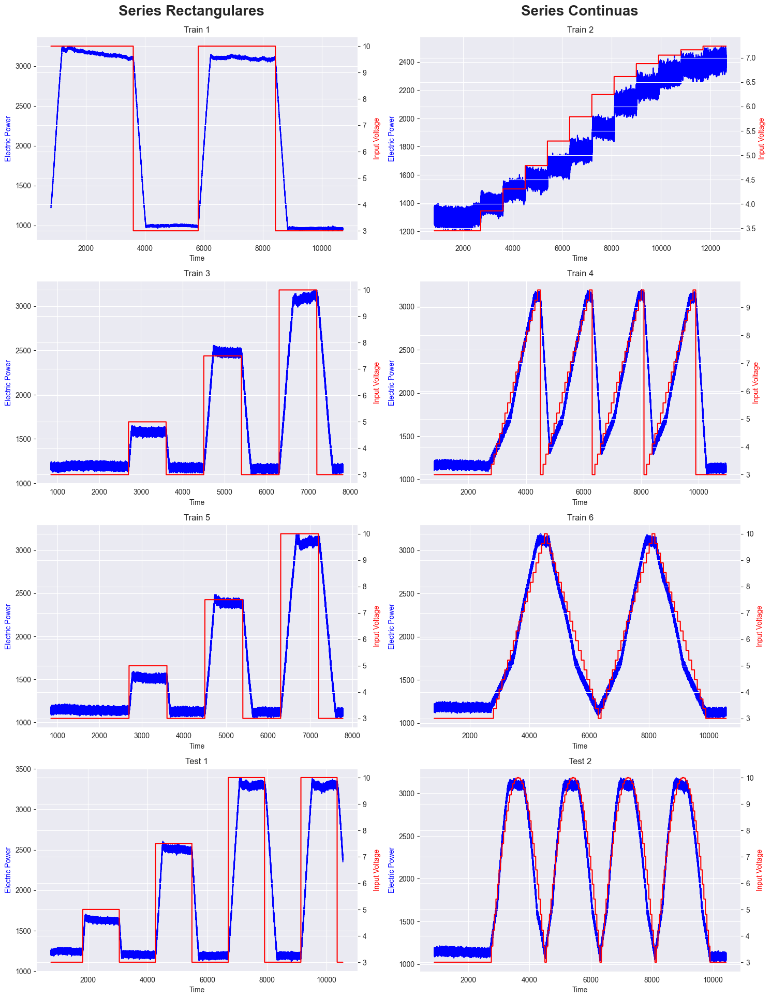
Propuesta de análisis#
_”Existen series de tiempo rectangulares y continuas
• Las series de tiempo rectangulares representan escenarios en los que la señal de control de entrada cambia instantáneamente, pero la potencia de salida sigue con un retraso visible. El modelado preciso de las transiciones y las fases estacionarias es crucial para la modelación de estas turbinas.
• Las series de tiempo continuas representan escenarios donde la señal de control de entrada cambia gradualmente y no hay retrasos visibles en la potencia de salida. Para estas series de tiempo, aprender las transiciones es menos importante para modelar el comportamiento general.”
Se propone utilizar dos modelos. El primero para modelar los datos de series de tiempo rectangulares, que permita ajustarse mejor a las transiciones y a las fases estacionarias. El segundo para modelar los datos de series de tiempo contínuas, que permita seguir mejor las tendencias de crecimiento gradual.
Métrica de calificación#
Se utilizará el \(MAE\) como métrica de valoración del mejor ajuste.
Series rectangulares#
train_1_ts = pd.Series(data=train_1['el_power'].values, index=train_1.index).reset_index(drop=True)
train_3_ts = pd.Series(data=train_3['el_power'].values, index=train_3.index).reset_index(drop=True)
train_5_ts = pd.Series(data=train_5['el_power'].values, index=train_5.index).reset_index(drop=True)
train_ts_rect = [train_1_ts, train_3_ts, train_5_ts]
import numpy as np
import pandas as pd
# Define las funciones
def firstsmooth(y, lambda_, start=None):
ytilde = y.copy()
if start is None:
start = y[0]
ytilde[0] = lambda_ * y[0] + (1 - lambda_) * start
for i in range(1, len(y)):
ytilde[i] = lambda_ * y[i] + (1 - lambda_) * ytilde[i - 1]
return ytilde
def measacc_fs(y, lambda_):
out = firstsmooth(y, lambda_)
T = len(y)
yh = y.copy().values
out = pd.concat([pd.Series([y[0]]), out[:-1]], ignore_index=True).values
prederr = yh - out
SSE = sum(prederr**2)
MAPE = 100 * sum(abs(prederr / yh)) / T
MAD = sum(abs(prederr)) / T
MSD = sum(prederr**2) / T
ret1 = pd.DataFrame({
"SSE": [SSE],
"MAPE": [MAPE],
"MAD": [MAD],
"MSD": [MSD]
})
ret1.reset_index(drop=True, inplace=True)
return ret1
Selección \(\lambda\)#
# Define el rango de lambda
lambda_vec = np.arange(0.1, 1.0, 0.05)
train_ts_rect[1]
0 1238.511285
1 1149.563728
2 1226.959165
3 1158.086961
4 1230.435294
...
6490 1127.814015
6491 1214.491728
6492 1122.583290
6493 1207.778415
6494 1120.801636
Length: 6495, dtype: float64
opt_lambda_vec=[]
for i, ts_rect in enumerate(train_ts_rect):
# Define la función SSE
def sse(sc):
return measacc_fs(ts_rect, sc)['SSE'].values[0]
# Inicializa sse_vec con el mismo tamaño que lambda_vec
sse_vec = pd.Series(index=lambda_vec)
# Calcula SSE para cada valor de lambda
for lambda_ in lambda_vec:
sse_vec.loc[lambda_] = sse(lambda_)
# Filtra los valores NaN para evitar problemas
sse_vec_filtered = sse_vec.dropna()
# Asegúrate de que el mínimo existe antes de intentar graficar
if not sse_vec_filtered.empty:
opt_lambda = sse_vec_filtered.idxmin()
opt_lambda_vec.append(opt_lambda)
# Gráfico
plt.plot(lambda_vec, sse_vec, marker='o', linestyle='-')
plt.title(f"$SSE$ vs. $\lambda={opt_lambda:.2f}$ for Series {i+1}")
plt.xlabel('$\lambda$')
plt.ylabel('$SSE$')
plt.axvline(x=opt_lambda, color='red', linestyle='--', label=f'Best $\lambda =${opt_lambda:.2f}')
plt.legend()
plt.show()
smooth1 = firstsmooth(y=ts_rect, lambda_=opt_lambda)
plt.plot(ts_rect, marker='o', linestyle='', markersize=3, label='el_power')
plt.plot(smooth1, label=f'SES $\\lambda={opt_lambda:.2f}$')
plt.xlabel('Time Index')
plt.ylabel('el_Power')
plt.legend()
plt.show()
smooth2 = firstsmooth(y=smooth1, lambda_=opt_lambda)
plt.plot(ts_rect, marker='o', linestyle='', markersize=3, label='el_power')
plt.plot(smooth2, label=f'SES $\\lambda={opt_lambda:.2f}$')
plt.xlabel('Time Index')
plt.ylabel('el_Power')
plt.legend()
plt.show()
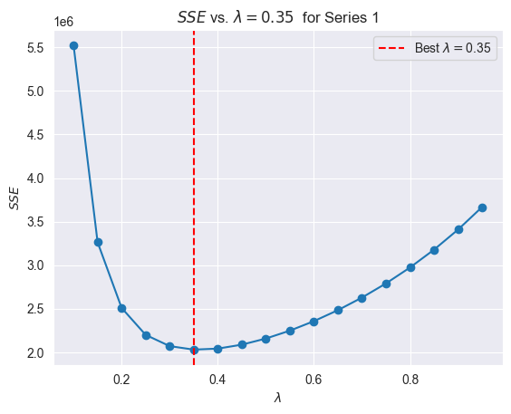
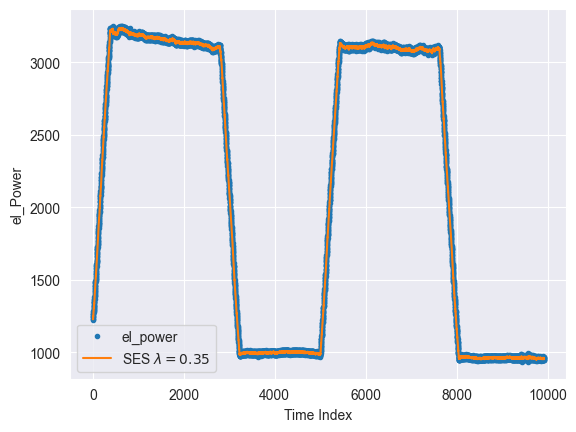
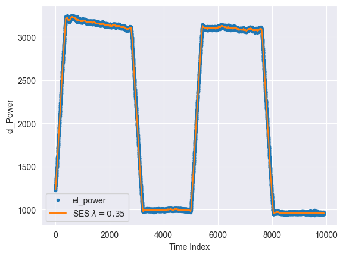
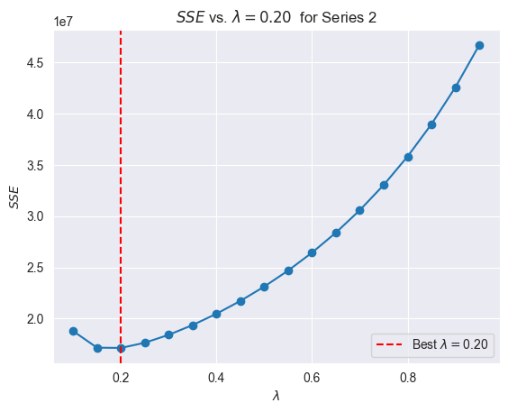
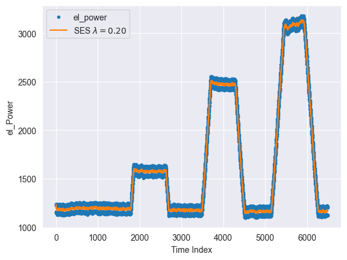
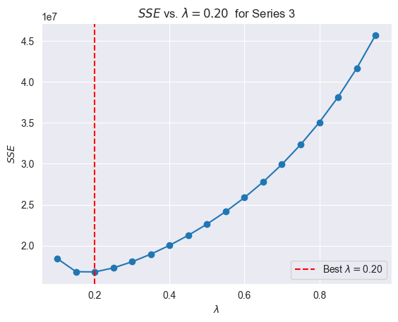
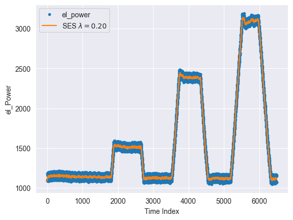
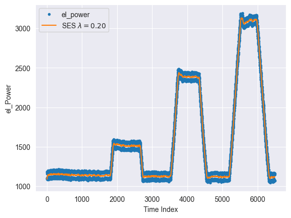
opt_lambda_vec
[0.3500000000000001, 0.20000000000000004, 0.20000000000000004]
results = []
# Itera sobre los datos
for i, ts_rect in enumerate(train_ts_rect):
for j, lambda_ in enumerate(opt_lambda_vec):
# Calcula la métrica
metrics = measacc_fs(y=ts_rect, lambda_=lambda_)
# Guarda los resultados en la lista
results.append({
'Train': 2*i+1,
'Lambda': lambda_,
'SSE': metrics['SSE'].values[0],
'MAPE': metrics['MAPE'].values[0],
'MAD': metrics['MAD'].values[0],
'MSD': metrics['MSD'].values[0]
})
# Convierte la lista a un DataFrame
mx_result = pd.DataFrame(results)
# Muestra el DataFrame final
print(mx_result)
Train Lambda SSE MAPE MAD MSD
0 1 0.35 2.030363e+06 0.733870 12.738725 204.673736
1 1 0.20 2.508858e+06 0.774527 13.582499 252.909056
2 1 0.20 2.508858e+06 0.774527 13.582499 252.909056
3 3 0.35 1.936789e+07 3.711045 53.786830 2981.968670
4 3 0.20 1.713701e+07 3.402731 49.316415 2638.493310
5 3 0.20 1.713701e+07 3.402731 49.316415 2638.493310
6 5 0.35 1.896804e+07 3.797557 53.188419 2920.405933
7 5 0.20 1.679710e+07 3.481599 48.762063 2586.158734
8 5 0.20 1.679710e+07 3.481599 48.762063 2586.158734
Al realizar el comparativo de los valores del MAPE para combinación de los conjuntos de entrenamientos y \(\lambda\) optimos por modelo. Se obtiene que el valor de \(\lambda\) que minimiza el porcentaje de error de las predicciones en relación al valor real (MAPE)es:
idx_min_mape = mx_result['MAPE'].idxmin()
optimal_lambda = mx_result.loc[idx_min_mape, 'Lambda']
optimal_lambda
0.3500000000000001
Ajuste con todos los datos de entrenamiento#
Se unifican datos, para realizar las predicciones. Se utilizará la métrica de MAEpara evaluar el mejor ajuste del modelo de suavización exponencial, simple, doble y triple.
import pandas as pd
import numpy as np
from matplotlib import pyplot as plt
import seaborn as sns
import statsmodels.api as sm
from sklearn.metrics import mean_absolute_error
import itertools
import warnings
from statsmodels.tools.sm_exceptions import ConvergenceWarning
warnings.simplefilter('ignore', ConvergenceWarning)
from statsmodels.tsa.holtwinters import ExponentialSmoothing
from statsmodels.tsa.holtwinters import SimpleExpSmoothing
from statsmodels.tsa.seasonal import seasonal_decompose
import statsmodels.tsa.api as smt
train_1_ts = pd.Series(data=train_1['el_power'].values, index=train_1.index)
train_3_ts = pd.Series(data=train_3['el_power'].values, index=train_3.index)
train_5_ts = pd.Series(data=train_5['el_power'].values, index=train_5.index)
test_1_ts = pd.Series(data=test_1['el_power'].values, index=test_1.index)
all_ts = pd.concat([train_1_ts, train_3_ts,train_5_ts,test_1_ts], axis=0,ignore_index=True)
lambda_ = optimal_lambda
all_ts.name = 'el_power'
all_ts.head()
0 1228.791720
1 1223.041745
2 1244.960866
3 1229.259058
4 1248.117024
Name: el_power, dtype: float64
all_ts.isnull().sum()
0
all_ts.plot()
<Axes: >
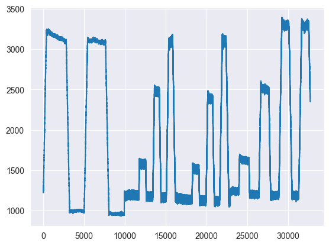
tau_test = len(test_1_ts)
tau_val=len(test_1_ts)
train=all_ts[:-(tau_val+tau_test)].copy()
val=all_ts[-(tau_val + tau_test):-tau_test].copy()
test=all_ts[-tau_test:].copy()
print(f"Train: {len(train)}, Validation: {len(val)}, Test: {len(test)}")
Train: 13115, Validation: 9795, Test: 9795
Se realiza segmentación de los datos, se selecciona igual cantidad de datos para el conjunto de validación, que los existente en la base de datos de test.
SES#
def plot_model(train, val, test, y_pred, title):
plt.figure(figsize=(10, 6))
train.plot(legend=True, label="Train", color='blue', title=f"{title} - Train, Validation, Test and Prediction")
val.plot(legend=True, label="Validation", color='orange')
test.plot(legend=True, label="Test", color='green')
y_pred.plot(legend=True, label="Prediction", color='red', style='--')
mae = mean_absolute_error(test, y_pred)
plt.title(f"{title}, MAE: {round(mae, 2)}")
plt.xlabel("Time")
plt.ylabel("Value")
plt.show()
def ses_optimizer(train, val, alphas, step_val):
best_alpha, best_mae = None, float("inf")
for alpha in alphas:
ses_model = SimpleExpSmoothing(train).fit(smoothing_level=alpha, optimized=False)
y_pred = ses_model.forecast(step_val)
mae = mean_absolute_error(val, y_pred)
if mae < best_mae:
best_alpha, best_mae = alpha, mae
return best_alpha, best_mae
def ses_model_tuning(train, val, test, step_test, step_val,title="Model Tuning - Single Exponential Smoothing"):
alphas = np.arange(0.8, 1, 0.01)
best_alpha, best_mae = ses_optimizer(train, val, alphas, step_val=step_val)
train_val = pd.concat([train, val])
final_model = SimpleExpSmoothing(train_val).fit(smoothing_level=best_alpha, optimized=False)
y_pred = final_model.forecast(step_test)
mae = mean_absolute_error(test, y_pred)
plot_model(train, val, test, y_pred, title)
ses_model_tuning(train, val, test, step_test=tau_test,step_val=tau_val,title='prueba')
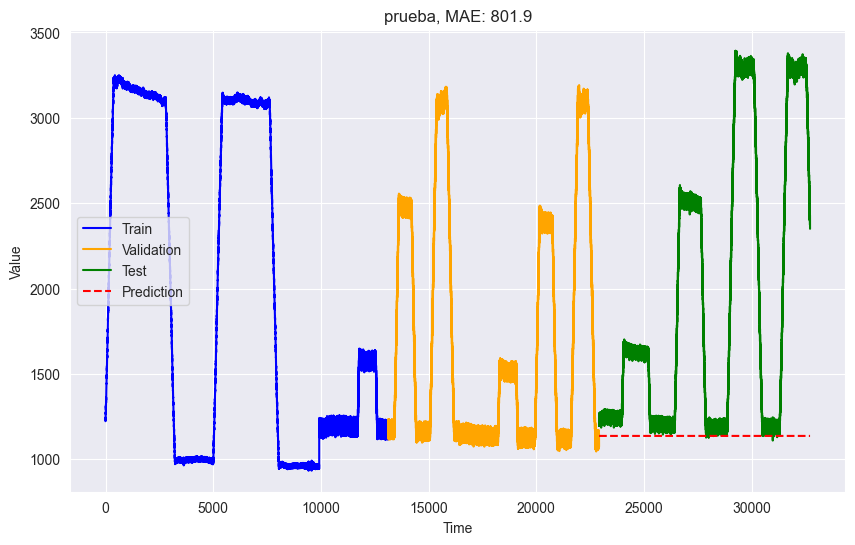
DES#
def des_optimizer(train, val, alphas, betas, trend, step_val):
best_alpha, best_beta, best_mae = None, None, float("inf")
for alpha in alphas:
for beta in betas:
des_model = ExponentialSmoothing(train, trend=trend).fit(smoothing_level=alpha, smoothing_slope=beta)
y_pred = des_model.forecast(step_val)
mae = mean_absolute_error(val, y_pred)
if mae < best_mae:
best_alpha, best_beta, best_mae = alpha, beta, mae
return best_alpha, best_beta, best_mae
def des_model_tuning(train , val, test,step_val,step_test, trend, title="Model Tuning - Double Exponential Smoothing"):
alphas = np.arange(0.35,1,1)
betas = np.arange(0.06,1,1)
print(alphas)
print(betas)
best_alpha, best_beta, best_mae = des_optimizer(train, val, alphas, betas, trend=trend, step_val=step_val)
train_val = pd.concat([train, val])
final_model = ExponentialSmoothing(train_val, trend=trend).fit(smoothing_level=best_alpha, smoothing_slope=best_beta)
y_pred = final_model.forecast(step_test)
mae = mean_absolute_error(test, y_pred)
plot_model(train, val, test, y_pred, title)
des_model_tuning(train, val, test, step_val=tau_val,step_test=tau_test, trend='add')
[0.35]
[0.06]
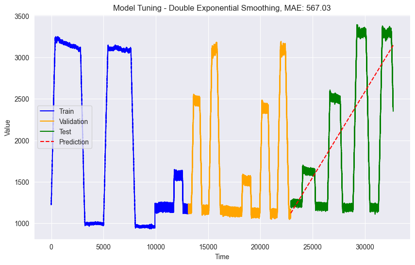
TES#
import pandas as pd
import numpy as np
import matplotlib.pyplot as plt
from statsmodels.graphics.tsaplots import plot_acf
plot_acf(train,lags=8000)
plt.xticks(range(0, 8001, 500),rotation=90)
([<matplotlib.axis.XTick at 0x1ec0de5e4f0>,
<matplotlib.axis.XTick at 0x1ec0de5e4c0>,
<matplotlib.axis.XTick at 0x1ec0de4ac70>,
<matplotlib.axis.XTick at 0x1ec0b35c6d0>,
<matplotlib.axis.XTick at 0x1ec0b35c2e0>,
<matplotlib.axis.XTick at 0x1ec0b4596d0>,
<matplotlib.axis.XTick at 0x1ec0b45d040>,
<matplotlib.axis.XTick at 0x1ec0b466dc0>,
<matplotlib.axis.XTick at 0x1ec0b4f2b50>,
<matplotlib.axis.XTick at 0x1ec0b3fa5e0>,
<matplotlib.axis.XTick at 0x1ec0b3c1b80>,
<matplotlib.axis.XTick at 0x1ec0b4abd60>,
<matplotlib.axis.XTick at 0x1ec0b3c6d30>,
<matplotlib.axis.XTick at 0x1ec0b4062e0>,
<matplotlib.axis.XTick at 0x1ec0b3ed4f0>,
<matplotlib.axis.XTick at 0x1ec0b492130>,
<matplotlib.axis.XTick at 0x1ec0b446d30>],
[Text(0, 0, '0'),
Text(500, 0, '500'),
Text(1000, 0, '1000'),
Text(1500, 0, '1500'),
Text(2000, 0, '2000'),
Text(2500, 0, '2500'),
Text(3000, 0, '3000'),
Text(3500, 0, '3500'),
Text(4000, 0, '4000'),
Text(4500, 0, '4500'),
Text(5000, 0, '5000'),
Text(5500, 0, '5500'),
Text(6000, 0, '6000'),
Text(6500, 0, '6500'),
Text(7000, 0, '7000'),
Text(7500, 0, '7500'),
Text(8000, 0, '8000')])
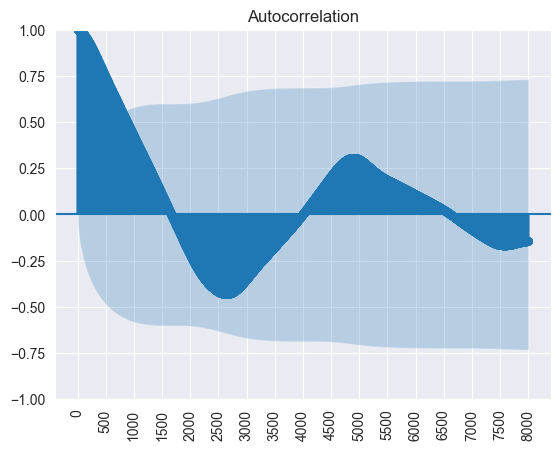
Por medio de la interpretación del gráfico de autocorrelación encontramos una posible estacionalidad, en los picos y vayes en lapsos de 2500 segundos.
Un estimado cercano de los periodos estacionales también pude encontrarse, al sumar la cantidad de datos y dividirlo entre el número de vayes o picos visibles en las gráfica de la serie temporal.
Por lo anteior, se define Seasonal_periods=2550.
import pandas as pd
tau_test = len(test_1_ts)
tau_val=len(test_1_ts)
train=all_ts[:-(tau_val+tau_test)].copy()
train.index = pd.to_datetime(train.index, unit='D')
start_time = train.index.min()
end_time = train.index.max()
new_index = pd.date_range(start=start_time, end=end_time, freq='D')
train = train.reindex(new_index)
val=all_ts[-(tau_val + tau_test):-tau_test].copy()
val.index = pd.to_datetime(val.index, unit='D')
start_time = val.index.min()
end_time = val.index.max()
new_index = pd.date_range(start=start_time, end=end_time, freq='D')
val = val.reindex(new_index)
test=all_ts[-tau_test:].copy()
test.index = pd.to_datetime(test.index, unit='D')
start_time = test.index.min()
end_time = test.index.max()
new_index = pd.date_range(start=start_time, end=end_time, freq='D')
test = test.reindex(new_index)
print(f"Train: {len(train)}, Validation: {len(val)}, Test: {len(test)}")
print("Frecuencia de train:", train.index.freq)
print("Frecuencia de val:", val.index.freq)
print("Frecuencia de test:", test.index.freq)
Train: 13115, Validation: 9795, Test: 9795
Frecuencia de train: <Day>
Frecuencia de val: <Day>
Frecuencia de test: <Day>
Dado que ExponentialSmoothing() no reconoce la frecuencia de ‘S’ para el procesamiento de datos se realiza cambio ficticio, en el que cada fila de información pasa a representar un día y no un segundo. Este cambio sólo es un asunto de forma el cual no afecta la interpretación final de los modelos resultantes.
def tes_optimizer(train, val, abg, trend, seasonal, seasonal_periods, step_val):
best_alpha, best_beta, best_gamma, best_mae = None, None, None, float("inf")
for comb in abg:
tes_model = ExponentialSmoothing(train, trend=trend, seasonal=seasonal, seasonal_periods=seasonal_periods,freq='D').\
fit(smoothing_level=comb[0], smoothing_slope=comb[1], smoothing_seasonal=comb[2])
y_pred = tes_model.forecast(step_val)
print("Longitud de y_true (val):", len(val)) # Impresión para inspección
print("Longitud de y_pred:", len(y_pred))
print("val:", val.head())
print("y_pred:", y_pred.head())
if len(val) == len(y_pred):
mae = mean_absolute_error(val, y_pred)
else:
print("Error: Longitudes no coinciden al calcular MAE.1")
print(f"Longitud de y_true (val): {len(val)}")
print(f"Longitud de y_pred: {len(y_pred)}")
mae = mean_absolute_error(val, y_pred)
if mae < best_mae:
best_alpha, best_beta, best_gamma, best_mae = comb[0], comb[1], comb[2], mae
print(f"Predicciones: {y_pred}, Longitud: {len(y_pred)}")
print(f"Validación: {val}, Longitud: {len(val)}")
return best_alpha, best_beta, best_gamma, best_mae
def tes_model_tuning(train, val, test, step_val, step_test, trend, seasonal, seasonal_periods, title="Model Tuning - Triple Exponential Smoothing"):
alphas = np.arange(0.35,1,1)
betas = np.arange(0.024,1,1)
gammas = np.arange(0.45,1,1)
abg = list(itertools.product(alphas, betas, gammas))
best_alpha, best_beta, best_gamma, best_mae = tes_optimizer(train, val, abg=abg, trend=trend, seasonal=seasonal, seasonal_periods=seasonal_periods, step_val=step_val)
train_val = pd.concat([train, val])
final_model = ExponentialSmoothing(train_val, trend=trend, seasonal=seasonal,seasonal_periods=seasonal_periods,freq='D').fit(smoothing_level=best_alpha, smoothing_slope=best_beta, smoothing_seasonal=best_gamma)
y_pred = final_model.forecast(step_test)[-step_val:]
if len(val) == len(y_pred):
mae = mean_absolute_error(val, y_pred)
else:
print("Error: Longitudes no coinciden al calcular MAE.2")
print(f"Longitud de y_true (val): {len(val)}")
print(f"Longitud de y_pred: {len(y_pred)}")
mae = mean_absolute_error(test, y_pred)
plot_model(train, val, test, y_pred, title)
return best_alpha, best_beta, best_gamma, best_mae
Tener un rango amplio de alphas, betas y gamma eleva exponencialmente el tiempo de procesamiento. Por lo cual, dadas las limitaciones de computo, se realizaron varias iteraciones con valores fijos de alphas, betas y gammas. Para textear el tiempo de procesamiento cuando, se definían diferentes valores para seasonal_periods. A continuación un gráfico del tiempo de procesamiento recopilados manualmente:


seasonal_periods = 2550 # Ajusta este valor según tus datos
best_alpha, best_beta, best_gamma, best_mae = tes_model_tuning(
train, val, test,
step_val=tau_val,
step_test=tau_test,
trend=None,
seasonal='add',
seasonal_periods=seasonal_periods
)
import pandas as pd
import numpy as np
import matplotlib.pyplot as plt
from statsmodels.tsa.holtwinters import ExponentialSmoothing
# Ajustar el modelo de suavización exponencial triple
model = ExponentialSmoothing(train, trend=None, seasonal='add', seasonal_periods=2500)
fit = model.fit()
# Realizar predicciones
pred = fit.forecast(steps=tau_val)
# Visualizar los resultados
plt.figure(figsize=(12, 6))
plt.plot(train, label='Datos originales', color='blue')
plt.plot(val,label='Datos Validación',color='orange')
plt.plot(fit.fittedvalues, label='Ajuste del modelo', color='red')
plt.plot(pred, label='Predicciones', color='grey', linestyle='--')
plt.title('Suavización Exponencial Triple')
plt.xlabel('Fecha')
plt.ylabel('Valores')
plt.legend()
plt.show()
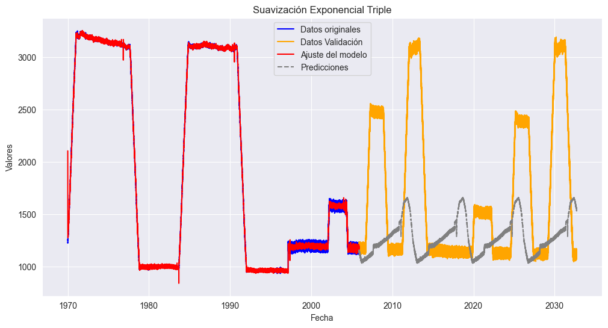
Series continuas#
train_2_ts = pd.Series(data=train_2['el_power'].values, index=train_2.index).reset_index(drop=True)
train_4_ts = pd.Series(data=train_4['el_power'].values, index=train_4.index).reset_index(drop=True)
train_6_ts = pd.Series(data=train_6['el_power'].values, index=train_6.index).reset_index(drop=True)
train_ts_cont = [train_2_ts, train_4_ts, train_6_ts]
import numpy as np
import pandas as pd
# Define las funciones
def firstsmooth(y, lambda_, start=None):
ytilde = y.copy()
if start is None:
start = y[0]
ytilde[0] = lambda_ * y[0] + (1 - lambda_) * start
for i in range(1, len(y)):
ytilde[i] = lambda_ * y[i] + (1 - lambda_) * ytilde[i - 1]
return ytilde
def measacc_fs(y, lambda_):
out = firstsmooth(y, lambda_)
T = len(y)
yh = y.copy().values
out = pd.concat([pd.Series([y[0]]), out[:-1]], ignore_index=True).values
prederr = yh - out
SSE = sum(prederr**2)
MAPE = 100 * sum(abs(prederr / yh)) / T
MAD = sum(abs(prederr)) / T
MSD = sum(prederr**2) / T
ret1 = pd.DataFrame({
"SSE": [SSE],
"MAPE": [MAPE],
"MAD": [MAD],
"MSD": [MSD]
})
ret1.reset_index(drop=True, inplace=True)
return ret1
Selección \(\lambda\)#
lambda_vec = np.arange(0.1, 1.0, 0.05)
train_ts_cont[1]
0 1102.949693
1 1199.403786
2 1113.199817
3 1200.377939
4 1105.465349
...
9183 1087.480971
9184 1175.438134
9185 1084.135839
9186 1159.916874
9187 1077.133288
Length: 9188, dtype: float64
opt_lambda_vec=[]
for i, ts_cont in enumerate(train_ts_cont):
# Define la función SSE
def sse(sc):
return measacc_fs(ts_cont, sc)['SSE'].values[0]
# Inicializa sse_vec con el mismo tamaño que lambda_vec
sse_vec = pd.Series(index=lambda_vec)
# Calcula SSE para cada valor de lambda
for lambda_ in lambda_vec:
sse_vec.loc[lambda_] = sse(lambda_)
# Filtra los valores NaN para evitar problemas
sse_vec_filtered = sse_vec.dropna()
# Asegúrate de que el mínimo existe antes de intentar graficar
if not sse_vec_filtered.empty:
opt_lambda = sse_vec_filtered.idxmin()
opt_lambda_vec.append(opt_lambda)
# Gráfico
plt.plot(lambda_vec, sse_vec, marker='o', linestyle='-')
plt.title(f"$SSE$ vs. $\lambda={opt_lambda:.2f}$ for Series {i+1}")
plt.xlabel('$\lambda$')
plt.ylabel('$SSE$')
plt.axvline(x=opt_lambda, color='red', linestyle='--', label=f'Best $\lambda =${opt_lambda:.2f}')
plt.legend()
plt.show()
smooth1 = firstsmooth(y=ts_cont, lambda_=opt_lambda)
plt.plot(ts_cont, marker='o', linestyle='', markersize=3, label='el_power')
plt.plot(smooth1, label=f'SES $\\lambda={opt_lambda:.2f}$')
plt.xlabel('Time Index')
plt.ylabel('el_Power')
plt.legend()
plt.show()
smooth2 = firstsmooth(y=smooth1, lambda_=opt_lambda)
plt.plot(ts_cont, marker='o', linestyle='', markersize=3, label='el_power')
plt.plot(smooth2, label=f'SES $\\lambda={opt_lambda:.2f}$')
plt.xlabel('Time Index')
plt.ylabel('el_Power')
plt.legend()
plt.show()
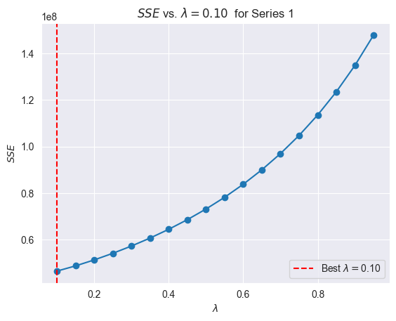
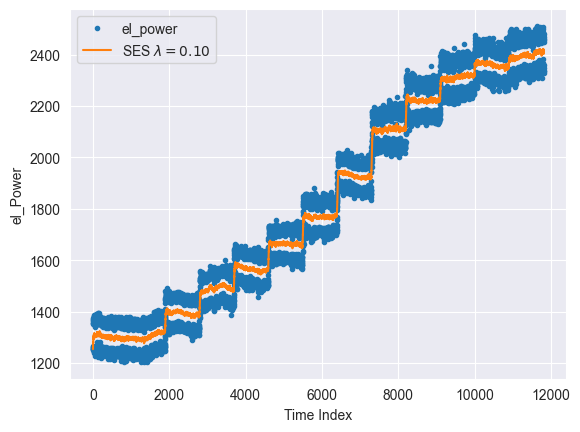
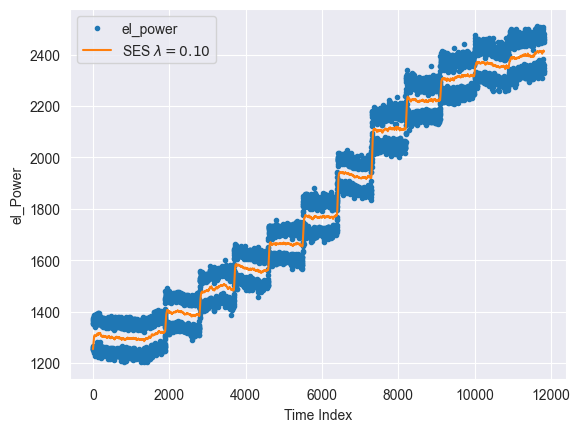
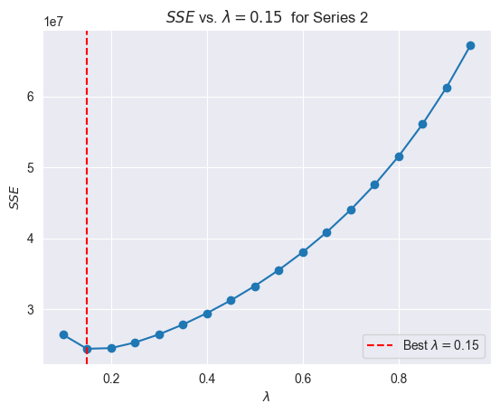
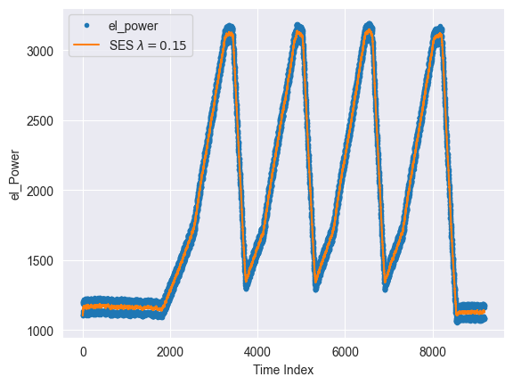
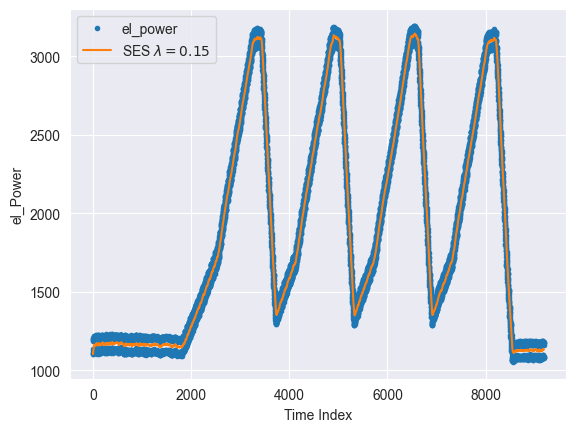
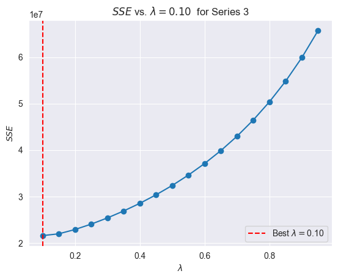
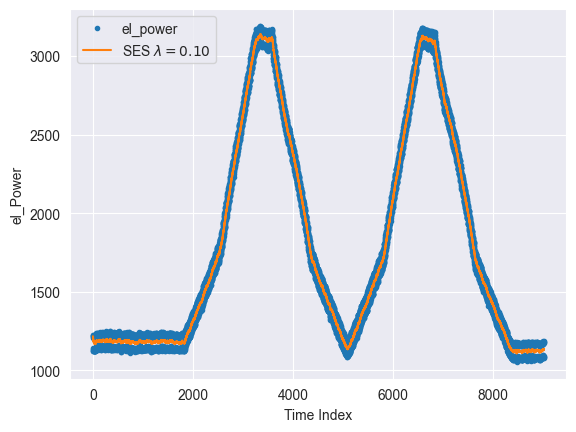
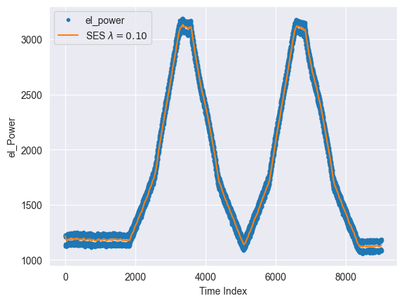
opt_lambda_vec
[0.1, 0.15000000000000002, 0.1]
results = []
# Itera sobre los datos
for i, ts_cont in enumerate(train_ts_cont):
for j, lambda_ in enumerate(opt_lambda_vec):
# Calcula la métrica
metrics = measacc_fs(y=ts_cont, lambda_=lambda_)
# Guarda los resultados en la lista
results.append({
'Train': 2*i+1,
'Lambda': lambda_,
'SSE': metrics['SSE'].values[0],
'MAPE': metrics['MAPE'].values[0],
'MAD': metrics['MAD'].values[0],
'MSD': metrics['MSD'].values[0]
})
# Convierte la lista a un DataFrame
mx_result = pd.DataFrame(results)
# Muestra el DataFrame final
print(mx_result)
Train Lambda SSE MAPE MAD MSD
0 1 0.10 4.648336e+07 3.490945 61.153435 3932.934818
1 1 0.15 4.872328e+07 3.584319 62.775446 4122.453424
2 1 0.10 4.648336e+07 3.490945 61.153435 3932.934818
3 3 0.10 2.643325e+07 2.897667 48.826658 2876.932039
4 3 0.15 2.443745e+07 2.896752 48.481375 2659.713215
5 3 0.10 2.643325e+07 2.897667 48.826658 2876.932039
6 5 0.10 2.157865e+07 2.950116 47.026061 2391.516498
7 5 0.15 2.196497e+07 3.029629 48.296951 2434.331183
8 5 0.10 2.157865e+07 2.950116 47.026061 2391.516498
Al realizar el comparativo de los valores del MAPE para combinación de los conjuntos de entrenamientos y \(\lambda\) optimos por modelo. Se obtiene que el valor de \(\lambda\) que minimiza el porcentaje de error de las predicciones en relación al valor real (MAPE)es:
idx_min_mape = mx_result['MAPE'].idxmin()
optimal_lambda = mx_result.loc[idx_min_mape, 'Lambda']
optimal_lambda
0.15000000000000002
Ajuste con todos los datos de entrenamiento#
Se unifican datos, para realizar las predicciones. Se utilizará la métrica de MAEpara evaluar el mejor ajuste del modelo de suavización exponencial, simple, doble y triple.
import pandas as pd
import numpy as np
from matplotlib import pyplot as plt
import seaborn as sns
import statsmodels.api as sm
from sklearn.metrics import mean_absolute_error
import itertools
import warnings
from statsmodels.tools.sm_exceptions import ConvergenceWarning
warnings.simplefilter('ignore', ConvergenceWarning)
from statsmodels.tsa.holtwinters import ExponentialSmoothing
from statsmodels.tsa.holtwinters import SimpleExpSmoothing
from statsmodels.tsa.seasonal import seasonal_decompose
import statsmodels.tsa.api as smt
train_2_ts = pd.Series(data=train_2['el_power'].values, index=train_2.index)
train_4_ts = pd.Series(data=train_4['el_power'].values, index=train_4.index)
train_6_ts = pd.Series(data=train_6['el_power'].values, index=train_6.index)
test_2_ts = pd.Series(data=test_2['el_power'].values, index=test_2.index)
all_ts_2 = pd.concat([train_2_ts, train_4_ts,train_6_ts,test_2_ts], axis=0,ignore_index=True)
lambda_ = optimal_lambda
all_ts_2.name = 'el_power'
all_ts_2.head()
0 1253.790314
1 1349.836854
2 1262.033813
3 1370.205819
4 1254.782490
Name: el_power, dtype: float64
all_ts_2.isnull().sum()
0
all_ts_2.plot()
<Axes: >
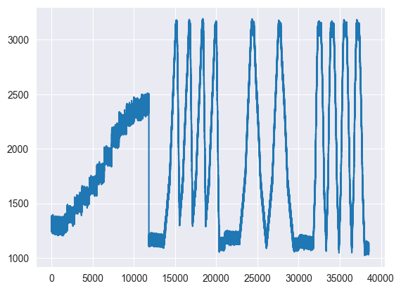
tau_test = len(test_2_ts)
tau_val=len(test_2_ts)
train=all_ts_2[:-(tau_val+tau_test)].copy()
val=all_ts_2[-(tau_val + tau_test):-tau_test].copy()
test=all_ts_2[-tau_test:].copy()
print(f"Train: {len(train)}, Validation: {len(val)}, Test: {len(test)}")
Train: 21540, Validation: 8490, Test: 8490
Se realiza segmentación de los datos, se selecciona igual cantidad de datos para el conjunto de validación, que los existente en la base de datos de test.
SES#
def plot_model(train, val, test, y_pred, title):
plt.figure(figsize=(10, 6))
train.plot(legend=True, label="Train", color='blue', title=f"{title} - Train, Validation, Test and Prediction")
val.plot(legend=True, label="Validation", color='orange')
test.plot(legend=True, label="Test", color='green')
y_pred.plot(legend=True, label="Prediction", color='red', style='--')
mae = mean_absolute_error(test, y_pred)
plt.title(f"{title}, MAE: {round(mae, 2)}")
plt.xlabel("Time")
plt.ylabel("Value")
plt.show()
def ses_optimizer(train, val, alphas, step_val):
best_alpha, best_mae = None, float("inf")
for alpha in alphas:
ses_model = SimpleExpSmoothing(train).fit(smoothing_level=alpha, optimized=False)
y_pred = ses_model.forecast(step_val)
mae = mean_absolute_error(val, y_pred)
if mae < best_mae:
best_alpha, best_mae = alpha, mae
return best_alpha, best_mae
def ses_model_tuning(train, val, test, step_test, step_val,title="Model Tuning - Single Exponential Smoothing"):
alphas = np.arange(0.8, 1, 0.01)
best_alpha, best_mae = ses_optimizer(train, val, alphas, step_val=step_val)
train_val = pd.concat([train, val])
final_model = SimpleExpSmoothing(train_val).fit(smoothing_level=best_alpha, optimized=False)
y_pred = final_model.forecast(step_test)
mae = mean_absolute_error(test, y_pred)
plot_model(train, val, test, y_pred, title)
ses_model_tuning(train, val, test, step_test=tau_test,step_val=tau_val,title='prueba')
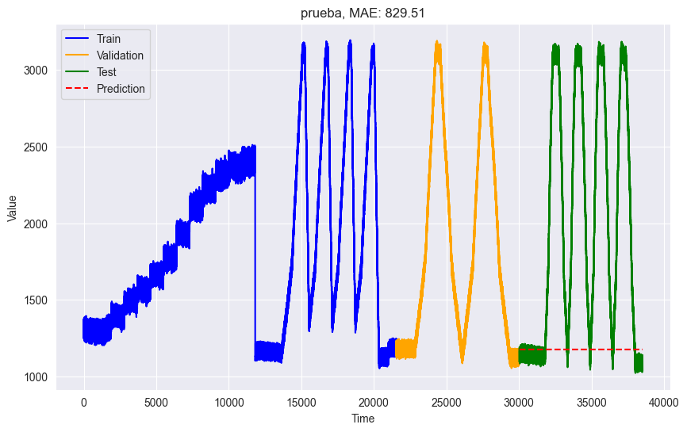
DES#
def des_optimizer(train, val, alphas, betas, trend, step_val):
best_alpha, best_beta, best_mae = None, None, float("inf")
for alpha in alphas:
for beta in betas:
des_model = ExponentialSmoothing(train, trend=trend).fit(smoothing_level=alpha, smoothing_slope=beta)
y_pred = des_model.forecast(step_val)
mae = mean_absolute_error(val, y_pred)
if mae < best_mae:
best_alpha, best_beta, best_mae = alpha, beta, mae
return best_alpha, best_beta, best_mae
def des_model_tuning(train , val, test,step_val,step_test, trend, title="Model Tuning - Double Exponential Smoothing"):
alphas = np.arange(0.15,1,1)
betas = np.arange(0.07,1,1)
print(alphas)
print(betas)
best_alpha, best_beta, best_mae = des_optimizer(train, val, alphas, betas, trend=trend, step_val=step_val)
train_val = pd.concat([train, val])
final_model = ExponentialSmoothing(train_val, trend=trend).fit(smoothing_level=best_alpha, smoothing_slope=best_beta)
y_pred = final_model.forecast(step_test)
mae = mean_absolute_error(test, y_pred)
plot_model(train, val, test, y_pred, title)
des_model_tuning(train, val, test, step_val=tau_val,step_test=tau_test, trend=None)
[0.15]
[0.07]
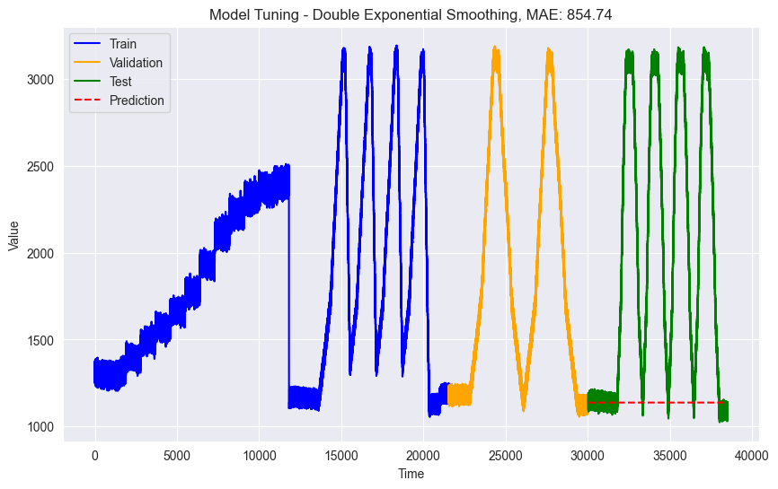
TES#
import pandas as pd
import numpy as np
import matplotlib.pyplot as plt
from statsmodels.graphics.tsaplots import plot_acf
plot_acf(train,lags=8000)
plt.xticks(range(0, 8001, 500),rotation=90)
([<matplotlib.axis.XTick at 0x16742d93af0>,
<matplotlib.axis.XTick at 0x16742d93ac0>,
<matplotlib.axis.XTick at 0x16742d935e0>,
<matplotlib.axis.XTick at 0x167463c9f40>,
<matplotlib.axis.XTick at 0x167463d18b0>,
<matplotlib.axis.XTick at 0x167463c9700>,
<matplotlib.axis.XTick at 0x167463d1970>,
<matplotlib.axis.XTick at 0x167463d9a60>,
<matplotlib.axis.XTick at 0x167463d91c0>,
<matplotlib.axis.XTick at 0x167463e2a60>,
<matplotlib.axis.XTick at 0x167463e28e0>,
<matplotlib.axis.XTick at 0x167463d9430>,
<matplotlib.axis.XTick at 0x167463ea5e0>,
<matplotlib.axis.XTick at 0x167463eadc0>,
<matplotlib.axis.XTick at 0x167463f45e0>,
<matplotlib.axis.XTick at 0x167463f4dc0>,
<matplotlib.axis.XTick at 0x167463ea460>],
[Text(0, 0, '0'),
Text(500, 0, '500'),
Text(1000, 0, '1000'),
Text(1500, 0, '1500'),
Text(2000, 0, '2000'),
Text(2500, 0, '2500'),
Text(3000, 0, '3000'),
Text(3500, 0, '3500'),
Text(4000, 0, '4000'),
Text(4500, 0, '4500'),
Text(5000, 0, '5000'),
Text(5500, 0, '5500'),
Text(6000, 0, '6000'),
Text(6500, 0, '6500'),
Text(7000, 0, '7000'),
Text(7500, 0, '7500'),
Text(8000, 0, '8000')])
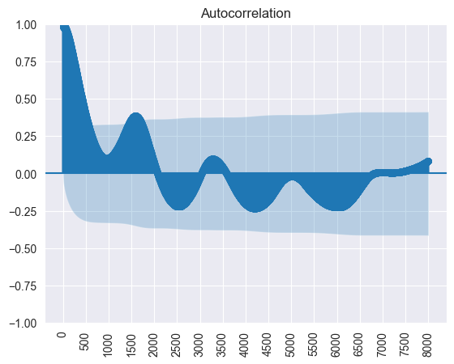
Por medio de la interpretación del gráfico de autocorrelación encontramos una posible estacionalidad, en los picos y vayes en lapsos de 1500 segundos.
Un estimado cercano de los periodos estacionales también pude encontrarse, al sumar la cantidad de datos y dividirlo entre el número de vayes o picos visibles en las gráfica de la serie temporal.
Por lo anteior, se define Seasonal_periods=1200.
import pandas as pd
tau_test = len(test_1_ts)
tau_val=len(test_1_ts)
train=all_ts_2[:-(tau_val+tau_test)].copy()
train.index = pd.to_datetime(train.index, unit='D')
start_time = train.index.min()
end_time = train.index.max()
new_index = pd.date_range(start=start_time, end=end_time, freq='D')
train = train.reindex(new_index)
val=all_ts_2[-(tau_val + tau_test):-tau_test].copy()
val.index = pd.to_datetime(val.index, unit='D')
start_time = val.index.min()
end_time = val.index.max()
new_index = pd.date_range(start=start_time, end=end_time, freq='D')
val = val.reindex(new_index)
test=all_ts_2[-tau_test:].copy()
test.index = pd.to_datetime(test.index, unit='D')
start_time = test.index.min()
end_time = test.index.max()
new_index = pd.date_range(start=start_time, end=end_time, freq='D')
test = test.reindex(new_index)
print(f"Train: {len(train)}, Validation: {len(val)}, Test: {len(test)}")
print("Frecuencia de train:", train.index.freq)
print("Frecuencia de val:", val.index.freq)
print("Frecuencia de test:", test.index.freq)
Train: 18930, Validation: 9795, Test: 9795
Frecuencia de train: <Day>
Frecuencia de val: <Day>
Frecuencia de test: <Day>
Dado que ExponentialSmoothing() no reconoce la frecuencia de ‘S’ para el procesamiento de datos se realiza cambio ficticio, en el que cada fila de información pasa a representar un día y no un segundo. Este cambio sólo es un asunto de forma el cual no afecta la interpretación final de los modelos resultantes.
def tes_optimizer(train, val, abg, trend, seasonal, seasonal_periods, step_val):
best_alpha, best_beta, best_gamma, best_mae = None, None, None, float("inf")
for comb in abg:
tes_model = ExponentialSmoothing(train, trend=trend, seasonal=seasonal, seasonal_periods=seasonal_periods,freq='D').\
fit(smoothing_level=comb[0], smoothing_slope=comb[1], smoothing_seasonal=comb[2])
y_pred = tes_model.forecast(step_val)
print("Longitud de y_true (val):", len(val)) # Impresión para inspección
print("Longitud de y_pred:", len(y_pred))
print("val:", val.head())
print("y_pred:", y_pred.head())
if len(val) == len(y_pred):
mae = mean_absolute_error(val, y_pred)
else:
print("Error: Longitudes no coinciden al calcular MAE.1")
print(f"Longitud de y_true (val): {len(val)}")
print(f"Longitud de y_pred: {len(y_pred)}")
mae = mean_absolute_error(val, y_pred)
if mae < best_mae:
best_alpha, best_beta, best_gamma, best_mae = comb[0], comb[1], comb[2], mae
print(f"Predicciones: {y_pred}, Longitud: {len(y_pred)}")
print(f"Validación: {val}, Longitud: {len(val)}")
return best_alpha, best_beta, best_gamma, best_mae
def tes_model_tuning(train, val, test, step_val, step_test, trend, seasonal, seasonal_periods, title="Model Tuning - Triple Exponential Smoothing"):
alphas = np.arange(0.15,1,1)
betas = np.arange(0.025,1,1)
gammas = np.arange(0.45,1,1)
abg = list(itertools.product(alphas, betas, gammas))
best_alpha, best_beta, best_gamma, best_mae = tes_optimizer(train, val, abg=abg, trend=trend, seasonal=seasonal, seasonal_periods=seasonal_periods, step_val=step_val)
train_val = pd.concat([train, val])
final_model = ExponentialSmoothing(train_val, trend=trend, seasonal=seasonal,seasonal_periods=seasonal_periods,freq='D').fit(smoothing_level=best_alpha, smoothing_slope=best_beta, smoothing_seasonal=best_gamma)
y_pred = final_model.forecast(step_test)[-step_val:]
if len(val) == len(y_pred):
mae = mean_absolute_error(val, y_pred)
else:
print("Error: Longitudes no coinciden al calcular MAE.2")
print(f"Longitud de y_true (val): {len(val)}")
print(f"Longitud de y_pred: {len(y_pred)}")
mae = mean_absolute_error(test, y_pred)
plot_model(train, val, test, y_pred, title)
return best_alpha, best_beta, best_gamma, best_mae
Tener un rango amplio de alphas, betas y gamma eleva exponencialmente el tiempo de procesamiento. Por lo cual, dadas las limitaciones de computo, se realizaron varias iteraciones con valores fijos de alphas, betas y gammas. Para textear el tiempo de procesamiento cuando, se definían diferentes valores para seasonal_periods. A continuación un gráfico del tiempo de procesamiento recopilados manualmente:
seasonal_periods = 1250
best_alpha, best_beta, best_gamma, best_mae = tes_model_tuning(
train, val, test,
step_val=tau_val,
step_test=tau_test,
trend=None,
seasonal='add',
seasonal_periods=seasonal_periods
)
Longitud de y_true (val): 9795
Longitud de y_pred: 9795
val: 2021-10-30 1483.034276
2021-10-31 1573.326660
2021-11-01 1489.743518
2021-11-02 1580.631205
2021-11-03 1494.476241
Freq: D, Name: el_power, dtype: float64
y_pred: 2021-10-30 1502.906212
2021-10-31 1547.828785
2021-11-01 1505.482858
2021-11-02 1554.522497
2021-11-03 1505.648312
Freq: D, dtype: float64
Predicciones: 2021-10-30 1502.906212
2021-10-31 1547.828785
2021-11-01 1505.482858
2021-11-02 1554.522497
2021-11-03 1505.648312
...
2048-08-19 1378.875615
2048-08-20 1451.068063
2048-08-21 1383.004713
2048-08-22 1449.148486
2048-08-23 1390.201398
Freq: D, Length: 9795, dtype: float64, Longitud: 9795
Validación: 2021-10-30 1483.034276
2021-10-31 1573.326660
2021-11-01 1489.743518
2021-11-02 1580.631205
2021-11-03 1494.476241
...
2048-08-19 1604.262647
2048-08-20 1690.161066
2048-08-21 1594.856867
2048-08-22 1684.952604
2048-08-23 1602.111847
Freq: D, Name: el_power, Length: 9795, dtype: float64, Longitud: 9795
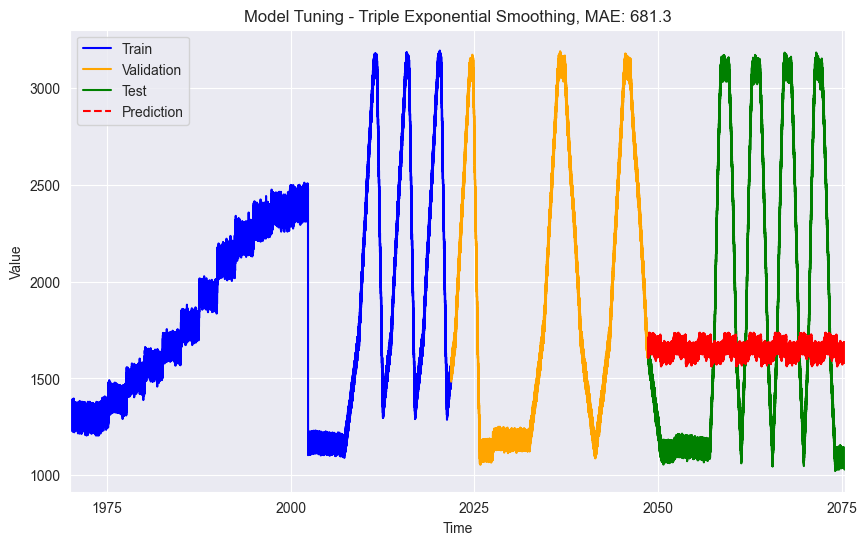
Conclusiones#
Los modelos de suavización exponencial permiten replicar patrones estacionales significativos. Esto se evidenció tanto en los modelos ajustados SES, DES y TES. Sin embargo el costo computacional es significativamente alto. Dado que la busqueda de los factores optimos se realiza de manera iterada, en la medida que aumentan la cantidades de datos aumenta la complejidad computacional.
Por lo tanto, como resultado tenemos dos modelos de suavización exponencial, uno para tipo de series rectangulares y conitnuas. Con resultados de MAE 925.84 y 681.3, respectivamente.
Las gráficas de los valores de las predicciones, evidencian una significativa falta de ajueste de los parámetros alpha, betas y gammas que garanticen una mejor predicción.
Sin embargo, con la limitación de recursos computacionales existence, los resultados obtenidos son los mejores encontrados haciendo iteraciones una a una, a prueba y error.